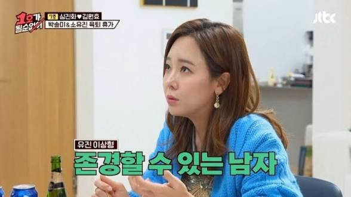
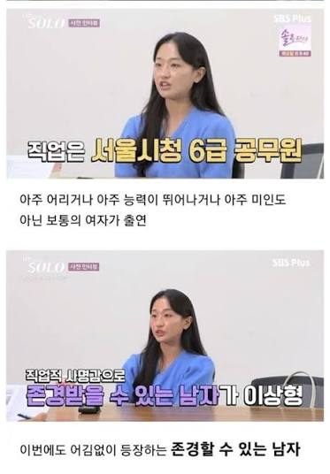
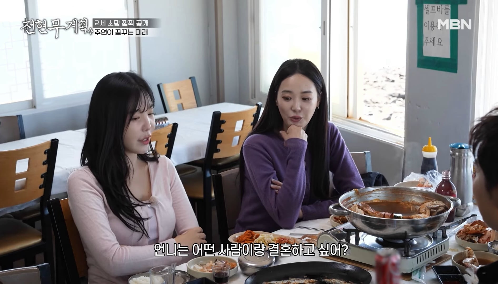
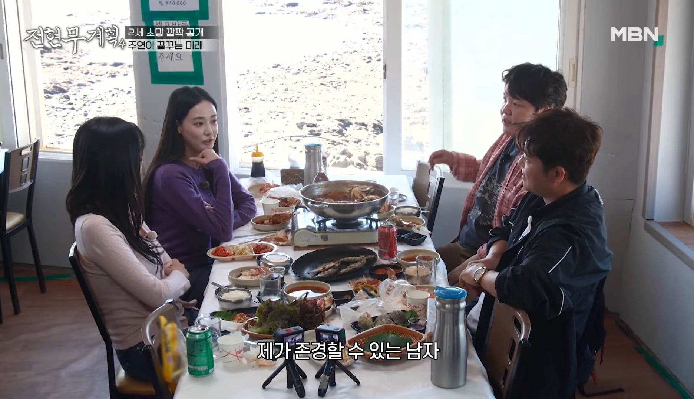
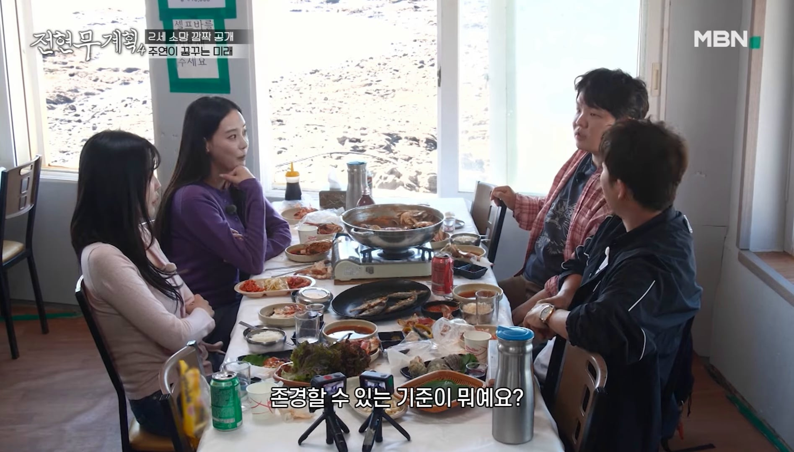
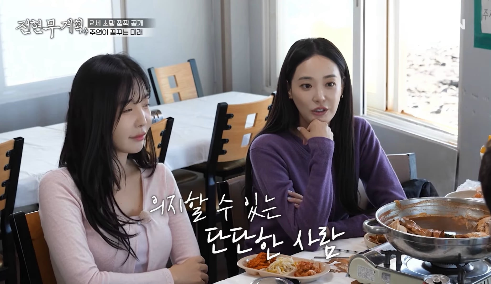

외모필요없고 존경받을수있는 남자






외모필요없고 존경받을수있는 남자
페미가 시작은 작았지만 결과는 ㅈ창낸것처럼
이것도 시간 지나면 너도나도 존경남, 안정남이요~ 할거 같으니까 그런게 아닐까
아빠 찾아요
여러분 혐오를 멈추고 구조적 이해를 갖추어 재치와 화술과 여유를 가지십시오. 이것들은 경제적 배경에서 일부 파생되기도 하나 대부분은 교육과 교양, 그리고 연습입니다.
이것들이 재능에 좌우된다고 말씀하실 예정이었다면, 함의하신 바가 결정론이든 자연스러움의 숭상이든 여러분들은 애써 배우자를 찾을 필요가 없으니 미워하실 필요가 없습니다.
만약 상기한 가치들을 알아주지 않는 사람들이 있다 하더라도, 그럼 당신에게는 좋은 일이 아닙니까?
존경 들먹이는 사람은 진짜 거르는게 맞음
존경 들먹이는 여자들의 존경의미는 보통 1)돈이 많고 2) 그 돈을 여자인 내가 쓰는데 아무 말도 안하는 돈많은 호구를 원하지만 3) 1),2)번의 의미를 숨기면서 뭔가 고상한 내 이미지를 원할때 사용하는 말이라고 확신합니다. 존나 이기적이지만 마치 누군가를 우러러볼수 있는 사람인척하는 화법이라고 생각합니다 ㅅㅂ
ㅋㅋㅋㅋㅋ정확하다
여성학배우신분 ㅋㅋㅋ
솔직한 정도까지는 안바라는데,
그냥 그 존경의 기준을 말하라고..
'존경하는 남자'에
안좋은 인식도 생겼으니까.
남자의 이상형이
존경할 수 있는 여자하면
개씹무능력쓰레기가 바라는 건 좆도많아 보임ㅋㅋ
엄마나 만나세요 소리나 듣고.
상향혼 하고싶다 그말임
문제는 속물적 조건을 충족하지 않는데 인성적으로 존경할만한 사람들을 나열해도 본인들이 말하는 존경은 그런게 아니라고 함. 근데 요상하게도 본인들이 존경스러운 케이스라면서 몇몇 읊는걸 보면 공통적으로 속물적 기준을 충족하는 남자들임. 그러면 기만이라고 생각해서 똑바로 말하라고 하는거지.
남자가 자기는 외모 하나도 안 본다고 진정한 마음의 동반자를 원한다고 하는데 진짜 순둥순둥 착하고 현모양처 스타일에 성격이 이를데 없이 선한데 딱 외모만 별로인 여자를 데려왔더니 아니래, 근데 그 남자가 기준 합격이라고 하는 사람들이 다 외모 상타에 가슴 E컵 이상에 성격은 천차만별이야. 그러면 화가 나 안 나?
거울은 매일 볼텐데
댓글들 개빡친거 웃기네 ㅋㅋㅋㅋㅋㅋㅋ
보통은 "흠 나는 아닌듯 잘찾아보시고 수고요~" 하고 다른 여자만날텐데 여긴 뭐이리 목숨걸고 인신공격하냐